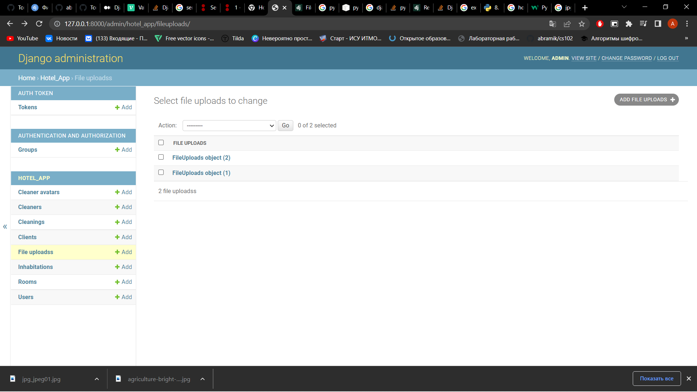

Задание 2.3.1
Реализовать следующие ендпоинты:
- Ендпоинт для загрузки файлов, с указанием внешнего ключа на связный объект и сохранением имени и размера файла в базе данных.
- Ендпоинт для сохранения нескольких файлов и валидации на максимальный размер файла и доступные для загрузки расширения файлов.
Модель файла - изображения участника:
class UploadAvatarClient(ViewSet):
queryset = CleanerAvatar.objects.all()
serializer_class = CleanerAvatarSerializer
permission_classes = [IsAuthenticated]
def create(self, request, *args, **kwargs):
file_uploaded = request.FILES.get('file_uploaded')
cleaner = request.POST.get('cleaner')
content_type = file_uploaded.content_type
file_name = file_uploaded.name
file_size = file_uploaded.size
serializer = self.serializer_class(data={"file": file_uploaded, "cleaner": cleaner, "file_size": file_size})
serializer.is_valid()
serializer.save(file_name=file_name)
response = f"POST API and you have uploaded a {content_type} file {file_name}"
return Response(response)
Валидатор:
@deconstructible
class FileValidator(object):
error_messages = {
'max_size': ("Ensure this file size is not greater than %(max_size)s."
" Your file size is %(size)s."),
'min_size': ("Ensure this file size is not less than %(min_size)s. "
"Your file size is %(size)s."),
'content_type': "Files of type %(content_type)s are not supported.",
}
def __init__(self, max_size=None, min_size=None, content_types=()):
self.max_size = max_size
self.min_size = min_size
self.content_types = content_types
def __call__(self, data):
if self.max_size is not None and data.size > self.max_size:
params = {
'max_size': filesizeformat(self.max_size),
'size': filesizeformat(data.size),
}
raise ValidationError(self.error_messages['max_size'],
'max_size', params)
if self.min_size is not None and data.size < self.min_size:
params = {
'min_size': filesizeformat(self.min_size),
'size': filesizeformat(data.size)
}
raise ValidationError(self.error_messages['min_size'],
'min_size', params)
if self.content_types:
content_type = magic.from_buffer(data.read(), mime=True)
data.seek(0)
if content_type not in self.content_types:
params = {'content_type': content_type}
raise ValidationError(self.error_messages['content_type'],
'content_type', params)
def __eq__(self, other):
return (
isinstance(other, FileValidator) and
self.max_size == other.max_size and
self.min_size == other.min_size and
self.content_types == other.content_types
)
file_validator = FileValidator(max_size=1024 * 100,
content_types=("image/jpeg",))
class FileUploads(models.Model):
file = models.FileField(validators=[file_validator])
Сериализатор для аватара:
class CleanerAvatarSerializer(ModelSerializer):
file = serializers.FileField()
class Meta:
model = CleanerAvatar
fields = ['file', 'cleaner', 'file_size']
Сериализатор для файлов:
class FileUploadsSerializer(ModelSerializer):
class Meta:
model = FileUploads
fields = ['file']
Вью для загрузки одного файла:
class UploadAvatarClient(ViewSet):
queryset = CleanerAvatar.objects.all()
serializer_class = CleanerAvatarSerializer
permission_classes = [IsAuthenticated]
def create(self, request, *args, **kwargs):
file_uploaded = request.FILES.get('file_uploaded')
cleaner = request.POST.get('cleaner')
content_type = file_uploaded.content_type
file_name = file_uploaded.name
file_size = file_uploaded.size
serializer = self.serializer_class(data={"file": file_uploaded, "cleaner": cleaner, "file_size": file_size})
serializer.is_valid()
serializer.save(file_name=file_name)
response = f"POST API and you have uploaded a {content_type} file {file_name}"
return Response(response)
Вью для нескольких файлов:
class UploadFiles(ViewSet):
queryset = CleanerAvatar.objects.all()
serializer_class = FileUploadsSerializer
permission_classes = [IsAuthenticated]
def create(self, request):
files = request.FILES.getlist('file')
file_serializers = []
for file in files:
print(file)
serializer = self.serializer_class(data={"file": file})
try:
serializer.is_valid(raise_exception=True)
file_serializers.append(serializer)
except ValidationError as err:
return HttpResponseBadRequest(err)
for serializer in file_serializers:
serializer.save()
response = f"POST API and yo
Загрузка одного файла:

Загрузка двух файлов:


Ошибки: